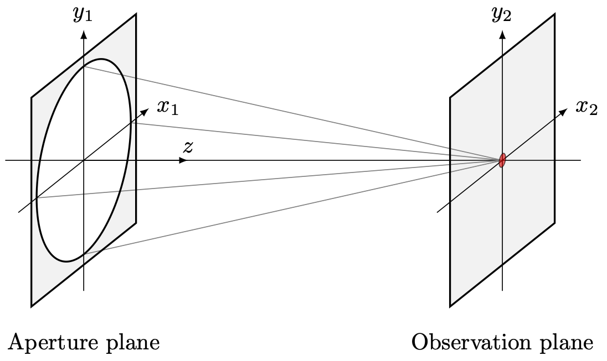
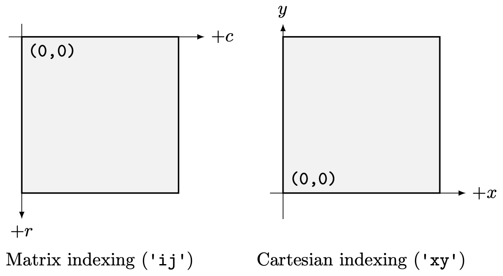

A consistent coordinate system for wave optics simulations#
A choice of harmonic time dependence fixes the sign of all phase factors throughout the diffraction formalism, including wave propagation operators, Fourier transforms, Optical Path Difference (OPD) definitions, and numerical propagation algorithms. Consistent use of a single convention is essential to avoid sign errors in simulated wavefronts and PSFs and when incorporating laboratory measurements or results from other analysis. Key results having implications for wave optics simulation are summarized in Table 1. The remainder of this document describes how the conventions in the table were derived through the specification of a sign convention for harmonic time dependence.
Table 1: Summary of harmonic time dependence sign convention and implications for wave optics simulation and phase retrieval.
Time convention |
\(\exp(-i\omega t)\) |
\(\exp(i\omega t)\) |
|---|---|---|
Spatial phasor contribution |
\(\displaystyle\frac{2\pi i}{\lambda}W\) |
\(\displaystyle\frac{-2\pi i}{\lambda}W\) |
Forward propagation |
|
|
Positive OPD |
Longer path length |
Shorter path length |
Positive wavefront error |
Longer path length |
Shorter path length |
Positive focus error |
Longer focal length |
Shorter focal length |
Positive tilt about \(x\) |
\(-v\) translation |
\(+v\) translation |
Positive tilt about \(y\) |
\(+u\) translation |
\(-u\) translation |
Converging spherical wave |
\(\exp\left[-i\frac{k}{2z} (x^2 + y^2)\right]\) |
\(\exp\left[i\frac{k}{2z} (x^2 + y^2)\right]\) |
Coordinate System#
We begin with the right-handed coordinate frame depicted in Figure 1. A diffracting aperture lies in the \((x,y)\) plane with the optical axis \(z\) pointing in the direction of propagation. The diffracted wave field is observed in the \((u,v)\) plane which is parallel to the aperture plane and separated by some distance \(+\Delta z\).

Figure 1: Coordinate system.#
Wave Propagation Sign Convention#
The phase of a wave traveling in \(+z\) takes the form \(\cos\left(kz-\omega t\right)\) or equivalently \(\cos\left(\omega t-kz\right)\). The choice of sign for the time component (harmonic time dependence) has downstream effects for wave optics simulations, including determining the sign convention for representing the complex pupil amplitude, the direction of Fourier transform used to model diffraction propagation, and whether positive OPD corresponds with longer or shorter path length.
Under the convention used most commonly in physics and optics, the harmonic time dependence term is negative. In complex notation, this gives us
corresponding with clockwise rotation in the complex plane. Extending Equation 1 to two dimensions gives
where
is the complex pupil function with amplitude \(A\), wavefront aberration \(W\), and wavelength \(\lambda\). Propagating this scalar field to an observation plane is described using the scalar diffraction integral derived from the wave equation. When the propagation distance is much larger than the aperture size and wavelength, the far-field (Fraunhofer) approximation may be applied. In the far-field, the quadratic phase terms associated with the propagation become negligible relative to the linear phase variation in the field and may therefore be omitted. The resulting field in the observation plane is given by
From the expression for the two-dimensional continuous Fourier transform
we see that Equation 4 is simply the Fourier transform of the complex pupil function \(f(x,y)\) evaluated at spatial frequencies
Most practical applications of Equation ref{eq:fraunhofer} use the Fast Fourier Transform (FFT) implementation of the Discrete Fourier Transform (DFT) to propagate from pupil plane to image plane. Across common scientific computing environments (NumPy, SciPy, MATLAB, IDL, FFTW, FFTPACK) the Fourier transform sign convention is consistent: fft() has a negative complex exponential and ifft() has a positive complex exponential. If a custom DFT implementation is used, care should be taken to ensure the sign convention used matches the standard Fourier transform sign convention.
Wavefront Error Sign Convention#
The sign convention used in the representation of wavefront error follows directly from the convention chosen for harmonic time dependence in Section ref{3}. Taking \(\exp\left(-i\omega t\right)\) as the time-dependent component, we rewrite Eqs. (2) and (3) to represent a wave propagating in the \(+z\) direction as
with amplitude \(A\), wavelength \(\lambda\), and position along the optical axis \(z\). From the spatial component of Equation ref{eq:full_phasor} we see that the spatial phase accumulating after traveling some distance \(z\) is
and that a wave traveling farther in \(z\) will have a more positive phase \(\phi\).
We define OPD as the aberrated optical path length minus the reference optical path length. [1] In two-dimensions, the OPD evaluated at each pupil coordinate is:
Finally, noting that wavefront error is simply the phase corresponding to a given OPD:
it follows that longer path length or OPD corresponds with positive wavefront error and with a more positive phase.
We now turn our attention to examining the impact of this sign convention on two of the most commonly observed optical aberrations: tilt and focus. Tilt in the pupil plane is represented by a linear phase ramp
From Equation ref{eq:pupil}, the corresponding complex pupil function is
Substituting into Equation ref{eq:fraunhofer} gives
By the Fourier shift theorem, the sign of the observation plane shift follows directly from the sign of the angular deviation of the propagation vector due to the tilt:
Using the right hand rule, a positive rotation about \(x\) rotates the direction of propagation in \(-y\), resulting in a shift in \(-v\) in the observation plane. For a rotation about \(y\), the propagation direction rotates in \(+x\) and a corresponding shift in \(+u\) in the observation plane. Note that this asymmetry in sign arises from the geometry of the coordinate system. The Fourier shift theorem itself treats \(x\) and \(y\) symmetrically, and the sign of the image plane shift follows directly from the sign of the OPD slope, which is set by the right-hand rule.
For focus, we return to the convention for wavefront error and OPD identified earlier: positive OPD corresponds with a longer path length. From Figure 2 we see that a wavefront with positive focus error has a focal point displaced by \(+\Delta z\) relative to the nominal focal point (longer focal length). Relative to the reference wavefront, rays near the edge of the pupil travel a longer optical path before reaching focus, producing a positive OPD.
Figure 2: Positive focus corresponds with a wavefront whose focal length is longer relative to a reference sphere. A wavefront with negative focus has a shorter focal length.#
Validation via numerical simulation#

Tip/tilt#
A positive x-tilt rotates the yz plane clockwise about the x-axis resulting in a shift in the image plane in the positive y direction. A positive y-tilt rotates the xz plane clockwise about the y-axis resulting in a shift in the image plane in the negative x direction.
Focus#
A positive focus has the effect of shifting the focus point beyond the image plane (+z) while a negative focus has the effect of shifting the focus point in front of the image plane (-z).
We can test this by observing +/- defocused point spread functions of an imaging system with an asymmetric aperture (for example, in the shape of the letter P). We expect the positive focus image to have the same orientation as the aperture (consistent with observing the image before coming to focus) and the negative focus image to be flipped about both axes relative to the aperture (consistent with observing the image after passing through focus). The results of this exercise are presented below:
Footnotes